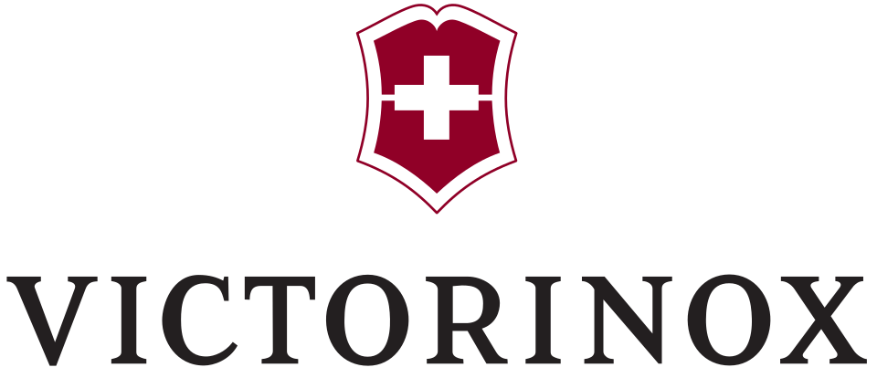

빅토리녹스 Victorinox
빅토리녹스(Victorinox)는 스위스 아미 나이프(Swiss Army Knife)를 비롯해 가방, 시계, 키친 나이프, 향수 등을 선보이는 스위스의 멀티 카테고리 브랜드이다.
최종 업데이트

빅토리녹스는 어떤 브랜드인가
빅토리녹스는 Swiss Army Knife를 대표 제품으로 하는 스위스 브랜드이다. 가방, 시계, 키친 나이프, 향수 등 일상에서 쓰는 다양한 제품군을 선보이며, 품질, 기능성, 혁신, 상징적 디자인을 제품에 내세우는 가치로 삼는다.
스위스 국기를 떠올리게 하는 방패와 십자가 모양의 로고를 사용하며, 현재 120여 개국에 진출해 있다. 1884년 Karl Elsener가 시작했고 본사는 Ibach에 있다.
2005년 Wenger를 인수했고, 2007년 Karl Elsener 4세가 경영을 이어받아 글로벌 멀티 카테고리 브랜드로 확대했다. 2000년에 설립된 Victorinox Corporate Foundation을 통해 환경적 지속 가능성을 위한 활동도 이어 가고 있다.
빅토리녹스는 어떻게 시작되고 성장했나
1884년 Karl Elsener 1세가 어머니 빅토리아의 지지를 받아 Ibach에 나이프 커틀러 작업장을 열면서 시작했다. 1891년 스위스 마스터 커틀러 협회를 설립했고, 그 결과 스위스 군대에 군용 나이프를 처음 공급했다.
1909년 어머니를 기리기 위해 Victoria를 브랜드 이름으로 선택하고 방패와 십자가를 트레이드마크로 등록했다. 1921년 스테인리스 스틸(Inox)이 발명되자 Inox와 Victoria를 조합해 Victorinox라는 이름이 만들어졌다.
1950년 Karl Elsener 3세가 회사 경영을 인수했고, 1979년 단독 소유주 회사를 가족 소유 회사인 Victorinox AG로 전환했다.
빅토리녹스의 브랜드 아이덴티티는 무엇인가
Swiss Army Knife를 중심으로 칼에서 가방, 시계, 향수까지 영역을 넓힌 스위스 브랜드이며, 방패와 십자가 모양의 로고를 쓴다.
빅토리녹스의 대표 제품과 서비스는 무엇인가
대표 제품은 Swiss Army Knife이다. 1897년 Officer's와 Sport's 나이프가 특허를 받았고, 이 나이프가 오늘날 전 세계에 Swiss Army Knife로 알려졌다.
키친 나이프와 가방, 시계, 향수도 선보이며, 1989년 미국에서 시계를 런칭했고 2001년 미국에 의류 라인을 론칭했다. 2007년 Victorinox Swiss Army Fragrance AG를 설립했고, 2014년에는 이전 라이선스 사용자로부터 Travel Gear를 인수해 Victorinox Travel Gear AG를 설립했다.
빅토리녹스는 지금 어떤 상태인가
2013년 Wenger 나이프 사업을 빅토리녹스 브랜드에 통합했고, 2016년 Delémont에 시계 역량 센터를 건설했다. 현재 120여 개국에 진출해 있다.
Ibach 공장은 지붕의 태양열 패널로 자체 전력을 공급받고, 포장재의 90% 이상을 재활용으로 만든다. 재활용한 커피 캡슐을 Swiss Army Knife로 재탄생시키는 협업도 지속하고 있다.
빅토리녹스 로고는 어떻게 변해왔나
자주 묻는 질문
빅토리녹스는 어느 나라 브랜드인가요?
빅토리녹스는 스위스의 홈·라이프스타일 브랜드입니다.
빅토리녹스는 언제 설립되었나요?
빅토리녹스는 1884년 설립되었습니다.
빅토리녹스의 브랜드 아이덴티티는 무엇인가요?
Swiss Army Knife를 중심으로 칼에서 가방, 시계, 향수까지 영역을 넓힌 스위스 브랜드이며, 방패와 십자가 모양의 로고를 쓴다.
빅토리녹스의 대표 제품은 무엇인가요?
대표 제품은 Swiss Army Knife이다.
빅토리녹스는 현재 어떤 상태인가요?
2013년 Wenger 나이프 사업을 빅토리녹스 브랜드에 통합했고, 2016년 Delémont에 시계 역량 센터를 건설했다.
빅토리녹스의 창업자는 누구인가요?
빅토리녹스의 창업자는 Karl Elsener입니다(위키데이터 기준).
빅토리녹스의 본사는 어디에 있나요?
빅토리녹스의 본사는 Ibach에 있습니다(위키데이터 기준).
출처와 검증
빅토리녹스 관련 참고: 공식 웹사이트 · 위키데이터 Q503405 · 한국어 위키백과 · 영어 위키백과. 브랜드명은 한글과 원어를 함께 표기하되 데이터에 없는 표기는 만들지 않습니다. 기원 국가·설립연도는 검수된 정의문에서 확인된 값을 우선하고, 없을 때만 공식 웹사이트 URL이 일치하는 위키데이터 개체의 값을 씁니다. 위키데이터 값은 2026-11-12 기준입니다.